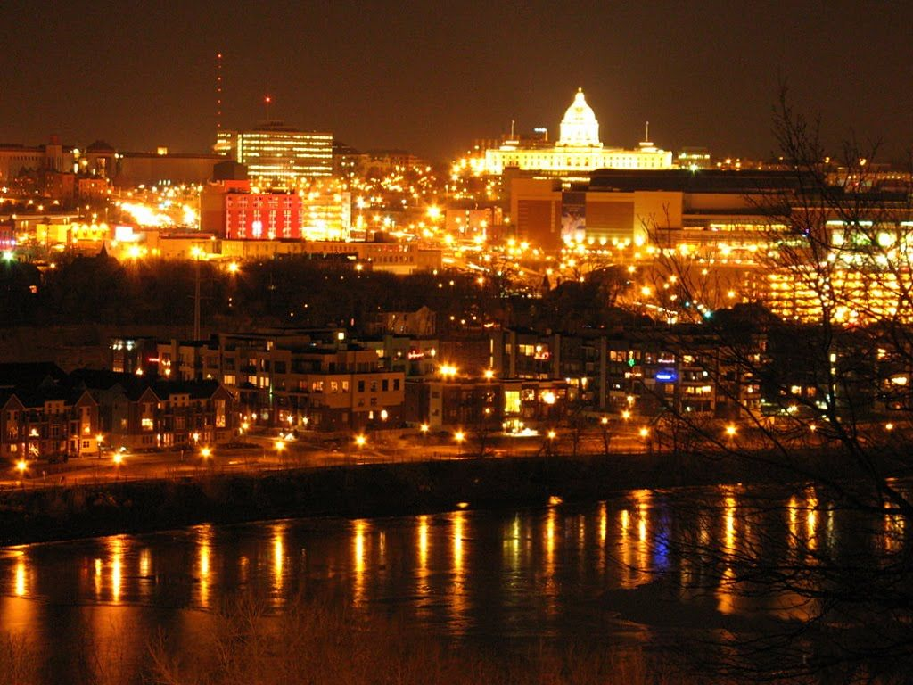

Hyderabad city familiarly known as the ‘Pearl city’ is one of the most prosperously expanding cities of India. There is an abundance of tourist attractions in Hyderabad here like historical monuments, beautiful gardens and parks, lakes and a variety of resorts. Among the must-visit tourist places in Hyderabad, will find a lot of museums and exquisite lip-smacking cuisines in Hyderabad.
One among the most enriching states in South India is the territory of Telangana and the area around its capital city of Hyderabad. Known for its zesty and tasty biryani and acclaimed spots like the Charminar and the Golconda Fort, this place is a standout amongst the most dynamic and overflowing spots in the south. Verifiable Monuments of Hyderabad are well known for their magnificent design. Numerous eminent landmarks are arranged in old city of Hyderabad and few of them are in and around Hyderabad city.
Apart from having a rich history, tourist places in Hyderabad also include the prime locations for technological development in India. You can visit the most beautifully designed ancient monument and mosques as well as temples in this city. The geographical location of Hyderabad has had a major influence on its varied cuisine, which ranges from the Hyderabadi style with its strong Mughalai influence, to a pure Andhra cuisine — hot and spicy.
Malls are a huge attraction in big cities. They provide great recreation and facilitates that long-pending fam-jam. Hyderabad is one of the biggest and tech-forward cities of Telangana. A vacation spot for many tourists and the residence of many Telugu film stars, Hyderabad has always been perceived to be one of the poshest cities in Telangana and Andhra Pradesh.
